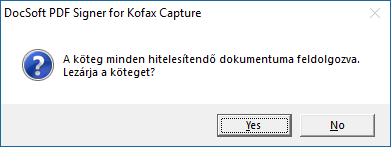

Amennyiben van hitelesítésre várakozó köteg, akkor a
Köteg megnyitása ablak
Ebben az ablakban választhatjuk ki a hitelesítésre megnyitni kívánt köteget.
A köteg megnyitását követően a rendszer automatikusan az első hitelesítendő dokumentumra ugrik.
Amennyiben nincs a kötegben hitelesítendő irat, vagy már minden szükséges iratot hitelesítettünk, akkor az alábbi üzenet jelenik meg:

Minden irat feldolgozva